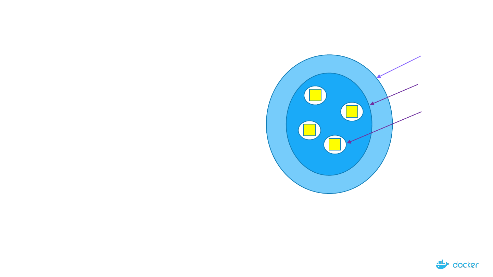
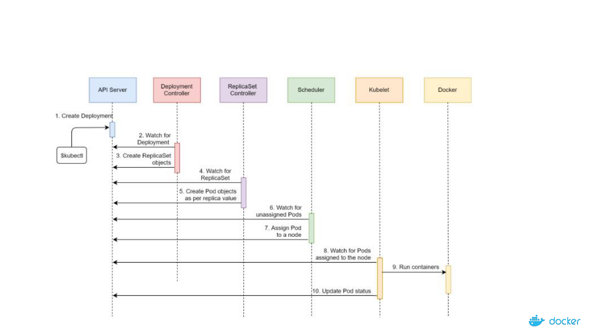
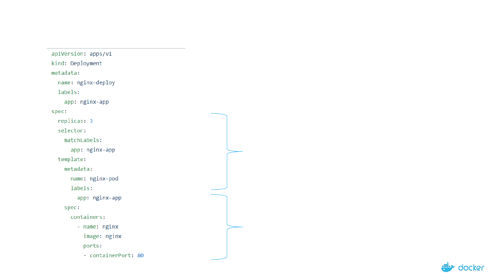
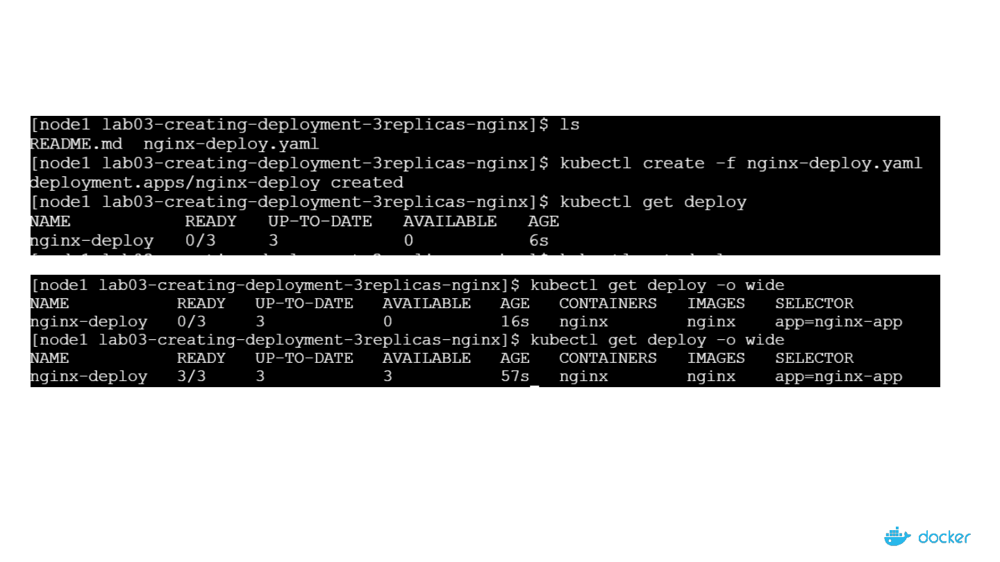
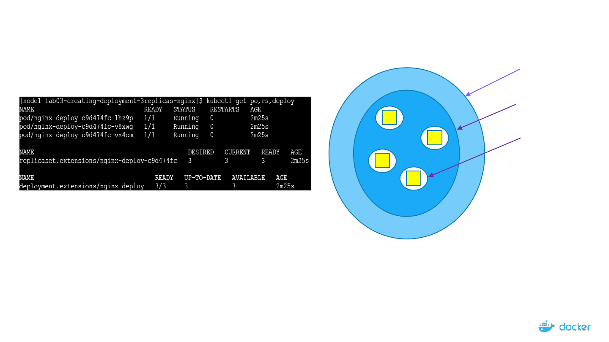
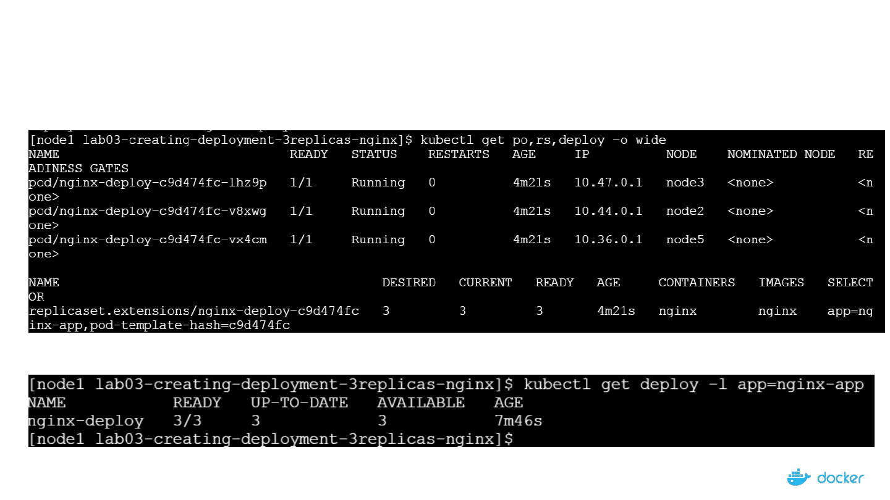
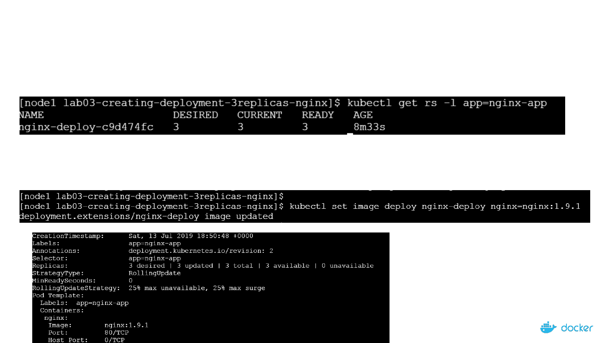
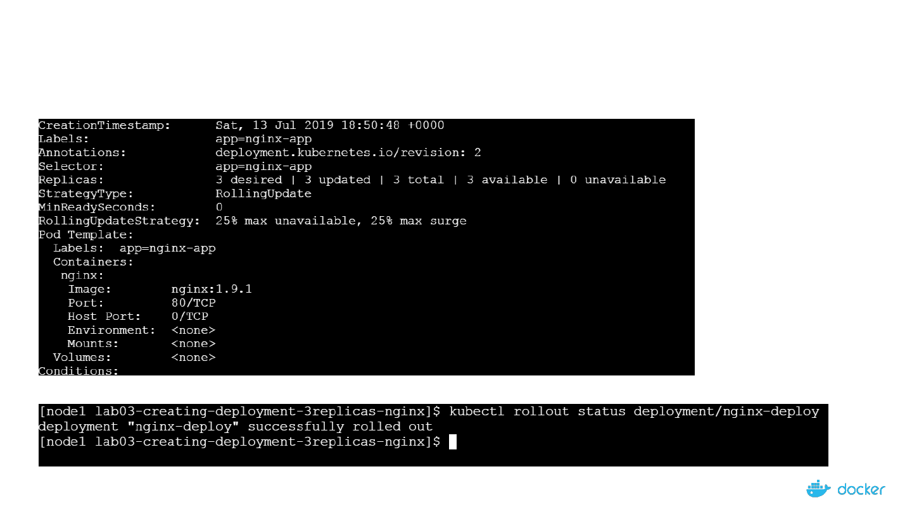
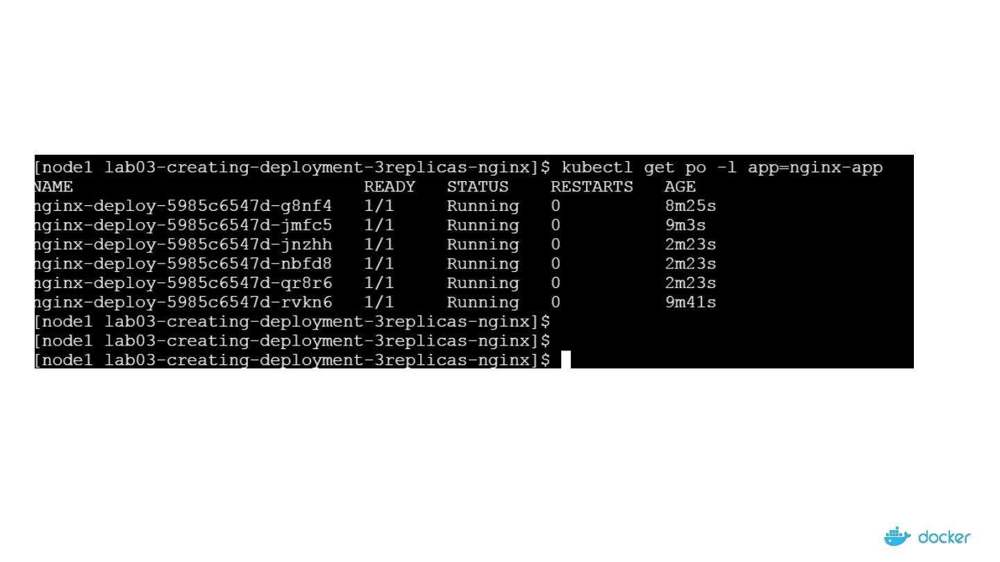

Demystifying
the Nuts & Bolts of
Kubernetes
Architecture
Deployment101

Deployment

Scenario: You deployed an app few months ago. Now you want to upgrade
your app from v1 to v2.
Can you upgrade with Zero downtime?
Can you upgrade sequentially one after another?
Can you pause and resume upgrade process?
Rollback upgrade to previous stable release

4
Agenda
• Deployment Overview
• Features
• Types of Deployment
• Demo
- Manifest File
- Deploy Application with Replication Controller
- Display & Validate
- Test Use cases
- Cleaning Up

Deployment
A Deployment controller provides declarative updates for Pods and ReplicaSets.
You describe a desired state in a Deployment, and the Deployment controller changes the
actual state to the desired state at a controlled rate. You can define Deployments to create
new ReplicaSets, or to remove existing Deployments and adopt all their resources with new
Deployments.
How is it different from Replicaset?
ReplicaSet doesn’t provide features like updates & roll backs.

A Single Deployment Manifest File
Pods
Deployment
ReplicaSet
Do we need to create 3 different
manifest files for each on these?
Answer is “No”. We can manage all 3
different objects(Pods, ReplicaSet &
Deployment) using a single
Deployment manifest file

7
Features of Deployment
• Multiple Replicas
• Upgrade
• Rollback
• Scale Up or Down
• Pause & Resume

Deployment Types - Recreate
• Recreate
How it works?
Shutting down version A and then making sure, version A is turned off...
then bringing up version B.
Demerits:
During this, there will be a downtime of the service.
Easy to setup.

Deployment Type – Rolling Updates
• RollingUpdate(Ramped or Incremental)
- Default updating strategy in Kubernetes.
- It can take sometime for a complete update process
How it works?
Slowly rollout a version of app by replacing instances one after the other until all the instances are successfully rolled
out.
Assume that there are 10 instances of version A which is running behind the LB. Then update strategy starts with
one instance of version B is deployed When version B is ready to accept traffic, one instance of version A is
removed from the pool

Deployment Type - Canary
• Canary
- Ideal deployment method for someone who want to test newer version before it is deployed 100%.
How it works?
This method is all about gradually shifting production traffic from version A to version B.
Lets imagine that there are about 10 instances of app version A running inside a cluster. You use Canary
deployment when you don’t want to upgrade all of your instances. Let's say you upgraded your 2 instances of
version A to version B then do some testing. If test results are good, then you upgrade remaining 8 instances to
version B. Say, your version B is ready, then you completely shut down version A.

Deployment Type – Blue Green
• Blue Green
- Instance roll out and roll back.
How it works?
Using this method, version B(which is GREEN) is deployed along side version A(which is BLUE) with exactly
same amount of instances.
After testing new version with all the requirement, the traffic is switched from version A to version B at the LB
level.

12
A Typical Deployment Workflow
Credits” Viktor Farcic

Demo - Deployment
- Manifest file
- Deploy app using RS
- Display and validate RS
- Test – Node Fails
- Test – Scale Up
- Test – Scale Down

14
Deployment Manifest File
ReplicaSet
Pods

15
Deployment

16
Deployment => Pods + ReplicaSet
Pods
Deployment
ReplicaSet

17
3 Instances of same Nginx Apps running in the form
of Pods

18
3 Instances of same Nginx Apps running in the form
of Pods
Update Deployment

19
3 Instances of same Nginx Apps running in the form
of Pods

20
Scaling up

21
Listing Pods by Labels


24
Thank You